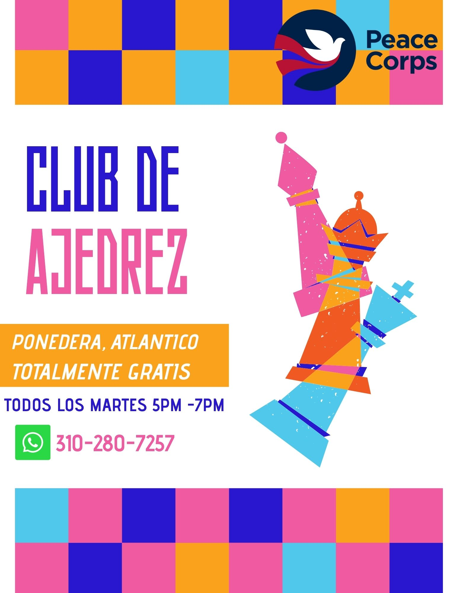

Workshops
> These are some of the workshops I'm currently teaching and developing.Entrepreneurship Workshop
This workshop focuses on helping entrepreneurs develop practical skills for starting, managing, and growing a business.
Get InvolveTopics Covered
- Business planning
- Marketing
- Financial management
- Customer service
- Business growth
Chess Workshop

This workshop introduces participants to chess while developing strategic thinking, problem-solving, concentration, patience, and decision-making skills.
Get InvolveTopics Covered
- Chess rules and fundamentals
- Piece movement and board setup
- Basic strategies and tactics
- Problem-solving and strategic thinking
- Practice games
English Conversation Workshop
This workshop provides participants with opportunities to practice conversational English in an interactive and supportive environment. The focus is on building confidence, improving communication skills, and using English in everyday situations.
Get InvolveTopics Covered
- Everyday conversations
- Vocabulary development
- Pronunciation
- Listening and speaking practice
- Confidence speaking English